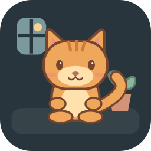
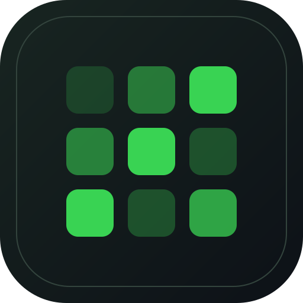
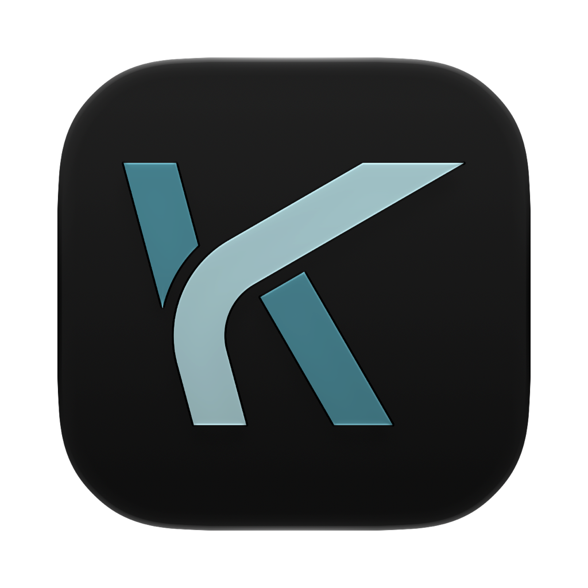
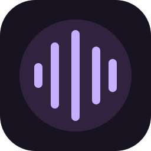

Achievements
Applications published on the App Store with thousands of downloads. Creator of popular Xcode extensions and Stream Deck plugins used by developers worldwide.

Software Developer from Madrid, Spain. Expert in software development for the entire Apple ecosystem (iOS, iPadOS, macOS, watchOS, tvOS), working with Swift and Firebase, and creating developer tools like Xcode extensions.
I'm a Software Developer based in Madrid, Spain, specializing in creating innovative applications and tools for the entire Apple ecosystem (iOS, iPadOS, macOS, watchOS, tvOS).
Applications published on the App Store with thousands of downloads. Creator of popular Xcode extensions and Stream Deck plugins used by developers worldwide.
I actively contribute to the Apple development ecosystem through open source projects and technical content creation. Mentor for developers working with Apple platforms.
Creator of tools like Localizapp for Xcode and Votice SDK. I'm passionate about solving complex problems and creating solutions that positively impact the developer community.
Over 10 years developing applications for Apple platforms (iOS, iPadOS, macOS, watchOS, tvOS) with Swift and Objective-C. Specialist in Firebase integration, REST APIs, MVVM, and VIPER architectures.
"I believe in the power of clean code, intuitive interfaces and solutions that truly solve problems. Each project is an opportunity to create something that improves people's lives and makes other developers' work easier."
Technology stack I use daily to develop high-quality applications for Apple platforms
Backend and real-time database
Version control and collaboration
Repositories and CI/CD
App localization
Classic Apple development

Monetization and subscriptions
Modern Apple platform development
User feedback and engagement
Cross-platform editor
Apple's official IDE
Applications for Apple platforms, developer tools and plugins I have developed
Raise a T. rex on Stream Deck with your local Git commits. Earn growth days and unlock rewards, with no streaks or cloud account.
Visit website
A Pomodoro timer with three cozy companions and four synchronized Stream Deck keys. Local and account-free.
Visit websiteLearn English with personalized AI lessons and voice tutoring. Self-host with local or cloud models.
Visit website
Your GitHub activity at a glance, with five contribution views and light or dark themes on Stream Deck.
Visit website
Configure your Keychron keyboard over USB in a dedicated desktop app, powered by the official launcher.
View sourceEdit and synchronize localization files directly in Xcode. Make multilingual Apple apps easier to maintain.
Visit websiteScan your Mac for malware with ClamAV, an interactive terminal interface and quarantine management.
View sourceA proof of concept for scanning and verifying Spain's miDNI QR codes, with an iOS app and Node.js backend.
Explore museums with an AI guide. Identify artworks and discover their stories on your Apple devices.
Visit website
Control Apple Music on your Mac from Stream Deck, with album artwork, playback, favorites and volume. Free and local.
Visit website
Chat with local or cloud AI models on iPhone, iPad and Mac, with voice support and image generation.
Visit websiteTurn local Git repositories into pixel plants that show changes and conflicts on Stream Deck. Read-only and local.
Visit website
Plan dives, calculate decompression and keep your dive log together, with dive tables and a nitrox calculator.
Visit websiteWatch your Glances servers with a Robot, Cyber Cat or Digital Slime on Stream Deck. Tap for live metrics or hold to open your dashboard.
Visit websiteTrack activities with one press on Stream Deck. Review your time, edit sessions and export CSV reports. Local and account-free.
Visit websiteCollect user feedback, organize suggestions and let your users vote on what your app should build next.
Visit websiteAdd feedback boards, suggestions and voting to your iOS app with a native, open-source Swift SDK.
View sourceMore tools, experiments and open source on GitHub .
Do you have a project in mind? Need to develop an application for Apple platforms or a developer tool?
I'm always interested in new opportunities and collaborations.
Specialties: Apple Software Development (iOS, iPadOS, macOS, watchOS, tvOS), Swift, Xcode Extensions, Firebase, API integration
Location: Madrid, Spain (remote work available)
Availability: Open to new opportunities and collaborations